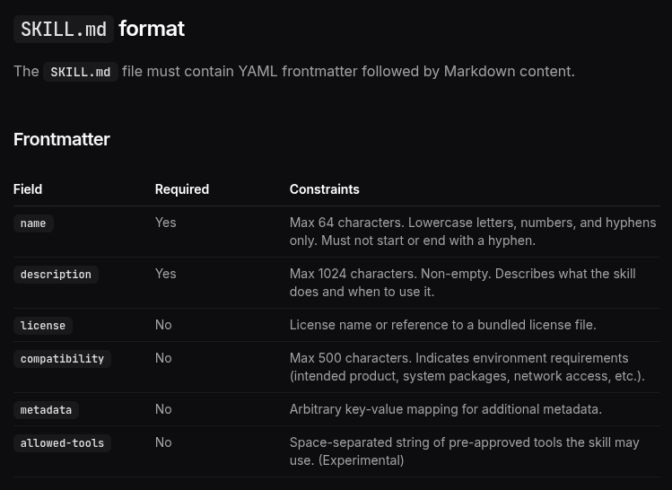
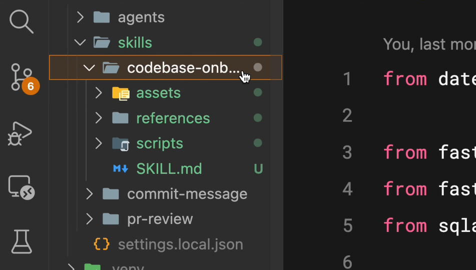

claude-code 101
2026年04月29日
regmonkey_index:
title_fontsize: 1.1em
bullet_fontsize: 0.85em
children:
- title: 1. メタデータの全体像
description:
- frontmatter は <strong>6 フィールド</strong>．必須は name と description のみ
- license・compatibility・allowed-tools・model はオプションの強化要素
width: [40, 60]
- title: 2. allowed-tools
description:
- 良い description は <strong>「何をする」+「いつ使う」</strong>の二点を含む
- allowed-tools で <strong>使えるツールを絞り</strong>，読み取り専用 Skill を作れる
width: [40, 60]
- title: 3. Progressive Disclosure
description:
- SKILL.md は <strong>500 行以内</strong>．scripts・references・assets に分割
- Scripts は<strong>実行のみ</strong>．本体は context を消費せず出力だけが乗る
- 既存ツールは <strong>uvx・npx</strong>，独自処理は <strong>PEP 723</strong> で同梱
- <strong>非対話・--help・構造化出力・冪等性</strong>を満たすよう設計する
width: [40, 60]
- title: 4. バリデーションチェック
description:
- <strong>シンプルから始め</strong>，必要に応じて高度な field を追加する
- 500 行を超えたら分割を検討．description は磨き続ける
- <strong>skills-ref</strong> CLI で公開前に frontmatter と構造をバリデーション
width: [40, 60]メタデータの全体像
allowed-tools
Progressive Disclosure
バリデーションチェック
制約や権限を宣言，context windowsの削減したい場面でOptionsを活用する

必須フィールド
name：識別子．最大 64 文字．小文字・数字・ハイフンのみdescription：マッチング基準．最大 1024 文字．非空任意フィールド
license：ライセンス名 or バンドルファイル参照compatibility：環境要件（最大 500 文字）metadata：任意の key-value マッピングallowed-tools：使用可能ツール（実験的）model：使用するモデルの指定メタデータの全体像
allowed-tools
Progressive Disclosure
バリデーションチェック
セキュリティ用途や副作用を避けたい workflow で，Claude の権限に明示的なガードレールを敷く
最小例：onboarding Skill
---
name: codebase-onboarding
description: Helps new developers
understand how the system works.
allowed-tools: Read, Grep, Glob, Bash
model: sonnet
---
When a new developer asks how the
system works:
1. Use Glob to map the directory tree
2. Use Grep to locate entry points
3. Read key modules and explainallowed-tools の効果
Edit，Write 等）は 使えない使いどころ
メタデータの全体像
allowed-tools
Progressive Disclosure
バリデーションチェック
全部を SKILL.md に詰めると context を圧迫する．本文は目次に徹し，詳細は別ファイルへ

3 つのオプションディレクトリ
scripts/：実行可能コード．自己完結 or 依存を明記references/：追加ドキュメント．REFERENCE.md FORMS.md などを置き，必要なときだけ読ませるassets/：静的リソース．テンプレ・図・データファイルなぜ分離するのか
本体は読まれず，実行結果（出力）だけが context に乗る．コードで書ける処理は scripts へ
向いている処理
Skill 設計の判断軸
scripts/ に置いて実行を指示する依存解決を実行時に任せれば環境構築が要らない．独自ロジックは PEP 723 で依存をインライン宣言
One-off：既存ツールをそのまま呼ぶ
compatibility フィールドで宣言scripts/ へ移行エージェントは stdout / stderr を読んで次の行動を決める．書き方が成功率を直接左右する
① 対話プロンプトは禁止
② --help で interface を自己文書化
--help を読んでスクリプトを学ぶ③ 親切なエラーメッセージ
--format must be one of: json, csv, table. Received: "xml"④ 構造化出力を stdout，診断は stderr
jq 等とのパイプライン合成が容易にエージェントはリトライする．副作用と出力サイズの暴走を抑える設計が事故を減らす
① 冪等性
② 入力制約
③ dry-run
--dry-run フラグで先にプレビューさせる④ 意味のある終了コード
--help に意味を明記⑤ 安全なデフォルト
--confirm・--force などの明示フラグを必須化⑥ 出力サイズの予測可能性
--offset で追加取得を許可メタデータの全体像
allowed-tools
Progressive Disclosure
バリデーションチェック
frontmatter のスキーマと include 構造を機械チェック．CI に載せれば壊れた Skill をマージ前で止められる
使い方
使いどころ
validate でカバーできること
include の glob と実ファイルの整合record1:
category: メタデータ
rule:
- name と description が必須．残りはオプションで<span class="regmonkey-bold">段階的に拡張</span>する
actions:
- name は最大 64 文字．小文字・数字・ハイフンのみ
- description は最大 1024 文字．非空
- 必要に応じてcompatibility・allowed-tools・model を活用
record3:
category: allowed-tools
rule:
- 使えるツールを限定し<span class="regmonkey-bold">read-only Skill</span>を実現する
actions:
- 列挙したツールは確認なしで利用可，列挙外は使えない
- 調査・要約など書き換えを伴わない workflow に最適
- 「うっかり Edit が走る」事故を予防
record4:
category: Progressive<br>Disclosure
rule:
- SKILL.md は<span class="regmonkey-bold">500 行以内</span>．詳細は別ファイルに逃がす
actions:
- scripts・references・assets の 3 サブディレクトリで整理
- Scripts は実行のみ．本体は context を消費せず出力だけが乗る
- SKILL.md は目次に徹し，個別ファイルは遅延ロード
record5:
category: スクリプト<br>設計
rule:
- エージェント実行を前提に<span class="regmonkey-bold">「非対話・自己説明・構造化」</span>で書く
actions:
- 既存ツールは <code>uvx</code>・<code>npx</code>，独自処理は PEP 723 で依存をインライン宣言
- 非対話必須．<code>--help</code> と親切なエラーで自己文書化．構造化出力は stdout
- 冪等性・dry-run・終了コードで運用上の安全装置を仕込む
record6:
category: バリデーション
rule:
- 公開前に<span class="regmonkey-bold">skills-ref validate</span>で機械チェック
actions:
- <code>skills-ref validate ./my-skill</code> を CI に組み込む
- frontmatter のスキーマ準拠と include 整合を確認
- 壊れた Skill をマージ前にブロックRegmonkey Presentation. ©Ryo Nakagami. All rights reserved.